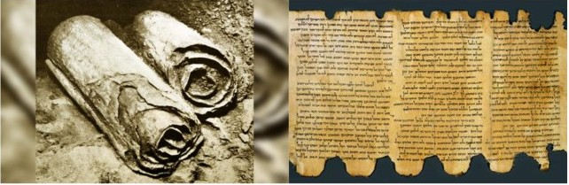

0120 believe that all is decided by fate (no free will). They separate themselves from the vulgar, impure priesthood and people, and bear many similarities to Christians: baptism, contemporizing prophecies, solar calendar, communal organization, Messianic vocabulary, apocalypticism, predestination, and dualism. They avoid the corrupt city and expect a Davidic Messiah and a future world (Daniel) in which the Davidic monarchy is guaranteed forever (Is 11:6, Jeremiah 23, Zechariah). Then God’s wrath will cease and He will establish a new covenant with them alone. The Dead Sea Scrolls: The War Scroll - in a final battle, setbacks are to be expected, but God’s intervention will be decisive. Pesher are texts with contemporary interpolation of prophecies. The sect goes extinct after the Fall of Jerusalem (70 CE).

0104-0103 Aristobolus I conquers Galilee, forces conversion to Judaism of Galileans.
0103-0076 Alexander Jannaeus (Greek name) defeats a rebellion, banquets as the rebels’ wives and children of the rebels are killed in front of the crucified rebels. The Hasmoneans have themselves become thoroughly Hellenized.
Mattathias Slays an Idolater
0076 Salome Alexandra, wife of Alexander, becomes regent and empowers the Pharisees against the Saducees, whom she removes from Jerusalem.
0067 Hasmonean Civil War: Alexandra dies and her two sons Hyrcanus II and Aristobolus II both seek Roman help. The two trade titles as the Romans solidify their rule over Judea.
0066 Rebellion: Cataclysm is imminent: should zealots themselves light the fuse (Pharisees) or will all happen according to the Divine Plan (Sadducees)? Ethnic and social tensions erupt (some burn debt records); Rome aids its allies, the aristocrats. After initial successes for the rebels, Vespasian isolates Jerusalem. Yohanan ben Zakkai escapes in a coffin, meets Vespasian, predicts his kingship. Vespasian is pleased, and asks what ben Zakkai wants, to which he replies “Give me only Yavne (anachronistic, the town was not yet built) and its wise men (not the priests?!).” Ben Zakkai establishes the first synagogue in Judea, citing Moses as the first rabbi.
~~~~~~~~